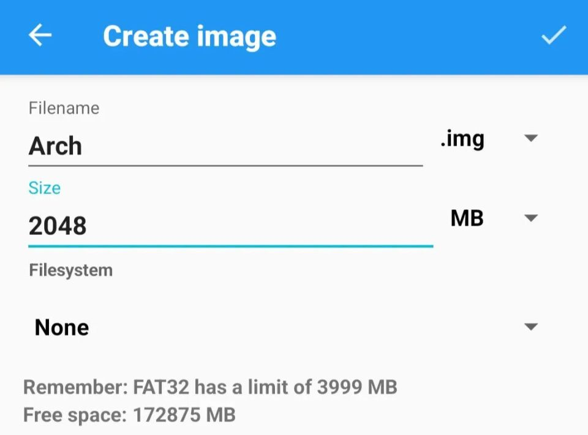
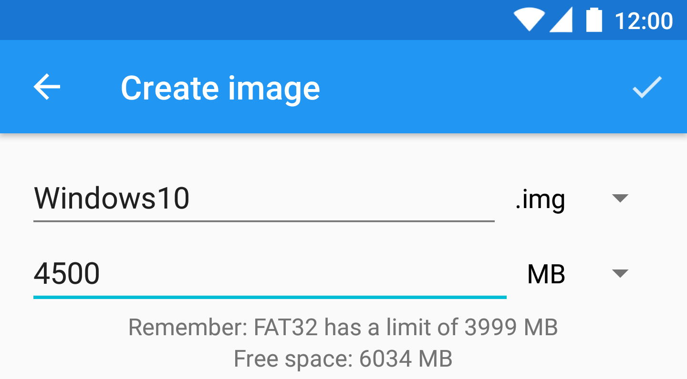
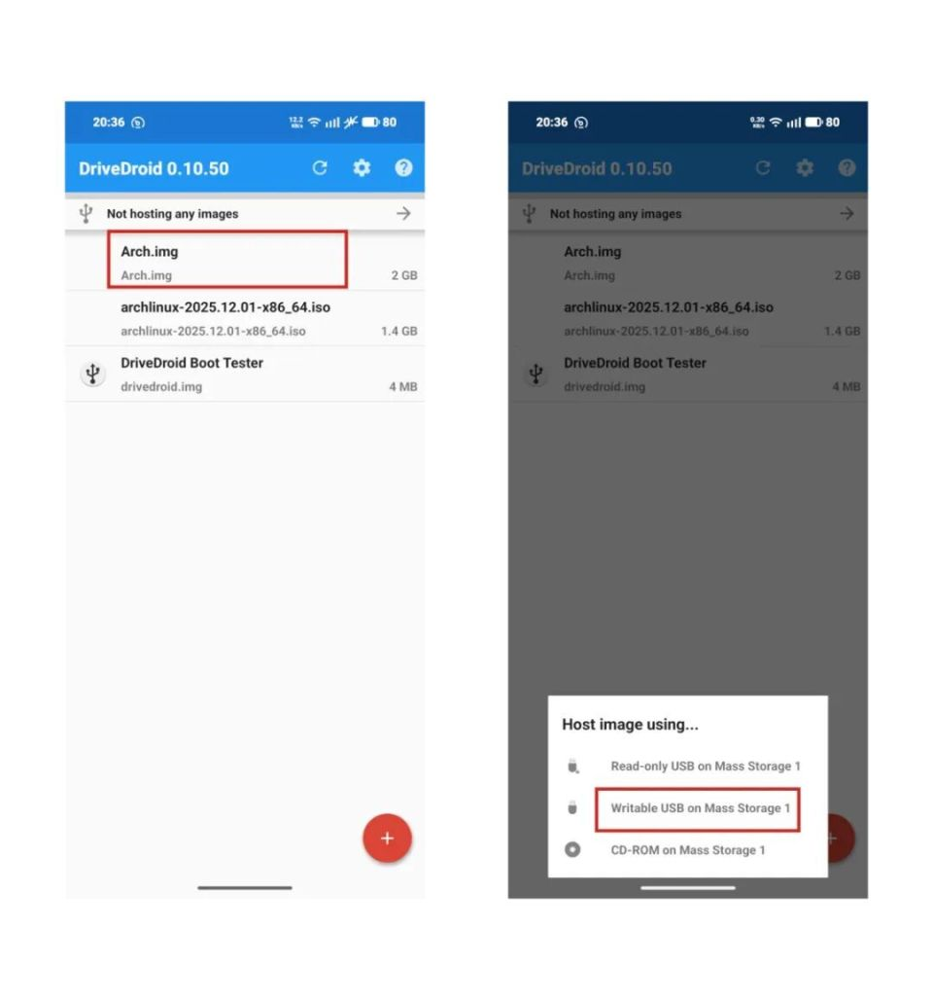

用了 Drivedroid 半年才发现的三个隐藏玩法，难怪停更七年还死不了
你以为它只是个能把手机当启动 U 盘的小工具？翻了底朝天才发现，空白 img、可读写 USB、持久化分区这些冷门技能藏得比想象中深。
你以为 Drivedroid 只是个"把手机当启动 U 盘"的 App？Drivedroid下载拿安装包装上 → 选 ISO → 挂起 → 插电脑引导，完事。我当初也是这么想的，直到有一天半夜 Kali Live 用完想存点东西却发现 Live 模式不持久，翻遍设置才撞见那些藏得真深的功能。
它停更多少年了——2018 年至今，Google Play 下架、Drivedroid官网部分链接失效，但圈内口碑丝毫不掉。为啥？因为这功能真没有替代品。而大多数人只用了它 30% 的本事。
第一个隐藏：空白 img 不是摆设，是绕开 CD-ROM 限制的钥匙
第一次看到右下角那个加号菜单里的 "Create blank image"，我以为就是个测试用的空文件占位。直到折腾 Windows 11 ISO 直接挂启不动——Android 内核只有 Mass Storage 协议，没有 CD-ROM gadget，非 Hybrid 的 ISO 直接挂就是一坨文件。

解法就是：先建空白 img，再用 Rufus 往里面写盘。这一步的精妙之处在于——你让电脑看到的是一块"物理 U 盘"，Rufus 可以对它做 GPT 分区、写引导、拷文件，跟操作实体 U 盘毫无区别。
创建时名字建议英文（win11、kali-persistence 这种），大小一步到位填准。免费版创建后不能改，付费版才能动态调整。Windows 10 建议 8GB 起，Windows 11 因为 ISO 普遍 8-12GB 还要 GPT，得 16GB 起。文件系统选 None 就行，后面 Rufus 会从头格式化。

写完盘之后，把模式切回只读 USB（或者直接在 DriveDroid 里卸载这个 img 再重新以只读挂载），就跟拿了一块写好系统的实体 U 盘没区别。关键是——这一切发生在手机里，不需要任何实体介质。
什么人用得上：经常装系统、需要不同版本 ISO 切换、不想备一堆 U 盘的折腾党。什么人可以无视：只偶尔用一次现成 Hybrid ISO 的普通用户。
第二个隐藏：可读写 USB 模式，把手机变成真正的 U 盘文件仓
我之前一直只读模式挂 ISO，可读写模式看都没看过——直到发现有人用它往空白 img 里塞了个 Kali Live 再加 2GB 的 persistent 分区。
可读写 USB 模式的入口藏在每个 img 的下拉选项里：Host image as writable USB device。跟只读模式的区别是，电脑对这个"U 盘"的任何修改都会直接写回手机上的那个 .img 文件。
这个模式三个玩法：
第一，配合空白 img 用 Rufus 写盘——上面第一个隐藏里讲的场景，没有可读写模式根本做不了。第二，Kali Live 持久化——建一个小空白 img 挂可读写，在电脑上用 parted 分区格式化，之后 Kali 就能把设置和文件存进去，重启不丢，这个玩法在Drivedroid文档里有详细步骤。第三，当临时 U 盘救急——出门忘带 U 盘又要传几十 G 文件给同事，手机空间够的话，建个 exFAT 空白 img 挂可读写，对方电脑就能当普通 U 盘读写。

风险也实打实存在：电脑格式化这个"U 盘"等于格式化手机里的 img 文件，正常行为但别手抖；写盘中途断线可能损坏 img，用稳定数据线；还有免费版 img 大小锁死，建的时候想清楚。
第三个隐藏：卸载与恢复，Mass Storage 模式的"退出"不是重启手机
第一次挂完 ISO 引导完想继续用手机传文件，结果插上电脑看到的还是那个 img 的内容——我以为手机坏了，重启才恢复。后来才知道 Drivedroid 有专门的卸载入口。
挂上任何 img 之后，DriveDroid 会把 USB 接口控制权从 MTP 协议转交给 Mass Storage 协议。这时候电脑看的是镜像，手机屏幕显示 "Hosting image"，文件传输通道被占了。恢复方法很简单：在镜像列表里找到正在挂的那个（右边有 USB 图标），点它选 Unhost，等几秒 USB 连接重新协商，就回到正常 MTP 了。通知栏快捷操作也能一键卸载。
有两个边界要记牢：写盘过程中绝对不能卸载，中途拔掉会直接把 img 写坏；电脑从手机引导系统的时候也别拔数据线，那是电脑的引导链还没走完。
提醒：这个绝版神器的坑
Drivedroid 停更七年还能用，靠的是 USB Mass Storage Gadget 这些内核功能的稳定性。但它的坑也跟年龄一样大——比如新版 Android 的 SELinux 策略偶尔会拦一下，需要配合 Magisk 模块修；付费版早已无法购买，免费版功能够用但 img 大小不能动态调；Google Play 早就下架了，只能从第三方渠道拿安装包，注意校验签名。
还有个反直觉的点：功能太小众反而成了护城河。让手机当启动盘这个需求本身就是极客中的极客用的，大部分人备块 U 盘就够了，没有商业价值就没人接盘。Linux 内核接口稳定 + 需求不激烈 = 绝版但不死。
收尾
把 Drivedroid 用透的感觉有点像挖到了一台还能跑的老游戏机——外表看着平平无奇，拆开才发现里面藏了一整套机制。空白 img 是钥匙，可读写模式是桥梁，卸载/恢复是安全出口。停更多少年反而让它成了一种"反潮流"的选择：零广告、零网络请求、纯本地单机、不注册不登录。想要的话找个渠道拿安装包就行，教程和参数说明比想象中全。考虑到停更后官方渠道不稳，社区整理的安装包和镜像分别在 GitHub、Gitee、GitCode 三处做了备份，哪个访问方便就用哪个。